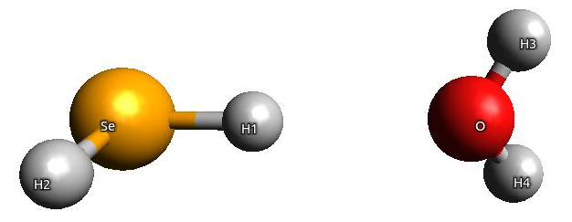

In this tutorial we will show how to calculate the NMR shielding tensor and the magnetizability tensor with London atomic orbitals within the FDE scheme.
The NMR shielding tensor and the magnetizability tensor (which we will jointly denote as P) can be calculated as a sum of a linear response contribution (Plinres) and an expectation value term (Pexpval):
P = Plinres + Pexpval
The former contribution is determined from the response equations, which require the modification of the property gradient due to the use of perturbation-dependent basis set in the FDE scheme (discussed in the next paragraph). The expectation value contribution requires analogous modifications only for the magnetizability tensor and will be discussed in a separate paragraph.
In order to calculate the NMR shielding tensor or the magnetizability tensor with LAOs, one must take into account modifications of the property gradient due to the use of perturbation-dependent basis sets (see Ilias2009). In FDE scheme, further modifications are needed, since the property gradient includes not only terms from isolated subsystems (here marked as "I" and "II"), but also a contribution from the interaction energy between these subsystems (see Hofener2013).
For instance, these new contributions to the property gradient of subsystem "I" can be written as (see :cite: olejniczak2017):
E[1],emb[B],I = −∫vembIΩiaB, I − ∬wembI, IΩiaIΩjjB, I − ∬wembI, IIΩiaIΩjjB, II
where ΩpqB, X is the first-order perturbed overlap distribution for a subsystem X (X ∈ {I, II}), which in a basis of London orbitals consists of two terms
$$\Omega_{pq}^{B,X} = \frac{i}{2} (R_{MN} \times r) \Omega_{pq}^X + (T_{pt}^{B*,X} \Omega_{tq}^X + \Omega_{pt}^XT_{tq}^{B,X}),$$
"direct" LAO term (the first term) and "reorthonormalization" term (in parenthesis). The vembI is the embedding potential of subsystem I, wembI, I is the embedding kernel involving subsystem I and wembI, II is the embedding kernel involving the coupling between subsystem I and subsystem II.
In this tutorial we will show how to include each of these contributions to the property gradient in the calculations of the NMR shielding tensor or the magnetizability tensor.
While the E[1],emb[B],X contribution to the property gradient formulated in response equations of subsystem "X" is the only modification that needs to be accounted for in the calculations of NMR shieldings, the magnetizability tensor requires additional terms in the expectation value part which arise due to the use of perturbation-dependent basis sets. As the magnetizability tensor is an extensive property, its expectation value part reads
ξexpval = ξexpvalI + ξexpvalII + ξexpvalI, II
where the first two terms involve the contributions from isolated susbsystems (X ∈ {I, II}):
ξexpvalX = ∫vembXΩiiB, B, X + ∬wembX, XΩiiB, XΩjjB, Y
and the last term involves the coupling between subsystems (X, Y ∈ {I, II};X ≠ Y):
ξexpvalXY = ∬wembI, IIΩiiB, XΩjjB, Y
As in the calculations of the property gradient, vembX, wembX, X and w_{emb}^{X,Y} are the embedding potential of subsystem X (X ∈ {I, II}), the embedding kernel involving subsystem X (X ∈ {I, II}) and the embedding kernel describing the coupling between subsystems X and Y (X, Y ∈ {I, II};X ≠ Y), respectively.
The first-order perturbed overlap distribution for a subsystem X (X ∈ {I, II}) is as in Eq.mo_lao_b, while the second-order derivative of the overlap distribution is more complex as it involves second-order derivatives of the "direct" and "reorthonormalization" terms presented in Eq.mo_lao_b, as well as a mixed derivative involving both, "direct" and "reorthonormalization" contributions.
We will consider a simple system of SeH2- H2O, in which SeH2 constitutes an active subsystem (subsystem I) and H2Ois an environment (subsystem II):

The computational protocol is different depending on whether the coupling between two subsystems is included or not (through the term dependent on wembI, II). To avoid confusion, we will describe these two protocols separately.
We will need two molecular input files. File h2se.mol, corresponding to an active subsystem I, reads:
and file h2o.mol, standing for a subsystem II ('environment'):
In this example we will use the four-component relativistic DC Hamiltonian and DFT/LDA with small grid and small basis sets.
NMR_calcs_numerical_grid
Here we demonstrate how to include the first two terms of Eq. fde_pg in the property gradient: terms dependent on the embedding potential and the uncoupled embedding kernel on an example of the NMR shielding tensor of Se nucleus.
In this tutorial, we use a coarse grid generated in DIRAC in preceeding calculations on SeH2- H2O 'supermolecule', which was then exported on a numerical_grid file. In DIRAC the numerical_grid file, which can be retrieved from DFT calculations, is divided into batches of points. However, FDE module is able to read only the continuous list of grid points, therefore such numerical_grid file has to be reformatted. This can be done by the script which can be found in utils/fde-mag directory of DIRAC, dft_to_fde_grid_convert.py, which should be called from the directory where the numerical_grid file is:
This script will overwrite the numerical_grid and save its original version as numerical_grid.ORIG (if numerical_grid.ORIG exists in your working directory, then the script will ask if it should be overwritten).
The first step is the calculation on subsystem II, the aim of which is to export its density and electrostatic potential on a text file.
The menu file getfrozen.inp reads:
and we make sure to get the text file GRIDOUT (related to the GRIDOU keyword). We should also remember to supply two files, related to keywords GRIDOU (GRIDOUT) and EXONLY (FILEEX), which are copies of a numerical grid file:
After this step, the GRIDOUT file will be updated: additional columns on that file correspond to the electrostatic potential and the density of subsystem II calculated in each point of a grid.
Now we can use the information about the subsystem II written on the GRIDOUT file for constructing the embedding potential, vembI, and embedding kernel, wembI, I. In order to do that, we use the GRIDOUT file saved from Step 1 and copy it to a FROZEN file, which is given as an argument to the FRDENS keyword.
We use the following input file for the SCF step:
and the pam command is:
To calculate the NMR shielding tensor, we use the following input file:
in which the keyword LAO11 denotes that the contributions from the embedding potential, vembI, and the uncoupled embedding kernel, wembI, I, will be added to the property gradient. The corresponding pam command is:
This is the advised option. However, as the calculations of the uncoupled embedding kernel terms in the property gradient may be expensive, one may want to restrict the FDE-LAO contributions to the part dependent on the embedding potential only. In this case, the input file reads:
and the corresponding pam command is:
Additionally, we may want to save the PAMXVC and TBMO files, if we are interested in visualization of the NMR shielding density and/or magnetically-induced current density. The calculation on our test molecule give the following results for the isotropic part of the shielding tensor of Se atom:
terms included in property gradient value None 2469.8091 v 2370.3941 v+w11 2370.2488
None in the table denotes calculations performed with no "new" FDE-LAO terms in the property gradient (the gauge origin is in the center of mass of SeH2). Also, in this test case the value obtained with the embedding potential and the uncoupled embedding kernel in the property gradient (v+w11) is very close to the result of calculations with the embedding potential only (v), but for heavier nuclei the difference between these two setups may be significant.
Here we will demonstrate how to include the coupling between two subsystems in the property gradient (term dependent on wembI, II).
In the first step we perform the calculations on subsystem II, the aim of which is to get its density and electrostatic potential written on a text file. In addition, we will export the perturbed density of subsystem II. We will need the DFCOEF file of subsystem II, which can be taken from getfrozen.inp run with the following input:
with the pam command:
(exactly as done in calculations without the FDE coupling terms presented above). From this step we save the GRIDOUT.h2o file. In order to get the density perturbed by an external magnetic field in LAO basis, the following input can be used:
with the keyword EXPPED (under NMR section) asking the program to save the contributions to the perturbed density on two files pertden_direct_lao.FINAL and pertden_reorth_lao.FINAL. The corresponding pam command is:
NOTE: This step has to be run in serial mode for the moment.
Now we can finally calculate the FDE contributions to the NMR shielding tensor of an active subsystem (H2Se) which depend on the embedding kernel including the coupling terms between two subsystems. If the SCF step on an active subsystem was not done before, we should run the following input:
with the pam command:
The response input is then the following:
with two new keywords: LAOFRZ and PERTIM. The corresponding pam command is:
This input does not include the computationally expensive Coulomb term in the embedding kernel, only the nonadditive exchange-correlation and kinetic parts of the embedding kernel. If the Coulomb term is to be calculated then an additional keyword is required in the input, LFCOUL. Instead of using the LFCOUL and the LAOFRZ keywords together, it is possible to use a single LAO12 keyword, which represents both contributions to the coupled embedding kernel:
with an analogous pam command:
This input contains all the necessary contributions to the property gradient. Additionally, we may want to save the PAMXVC and TBMO files, if we are interested in visualization of the NMR shielding density and/or magnetically-induced current density. With this setup the calculations on the test system gave the following results:
terms included in property gradient value v+w11+w12, no Coulomb 2370.2536 v+w11+w12, ALL terms 2370.2536
Here the two results are the same within 0.0001 ppm accuracy, as the contributions from the Coulomb embedding contribution to the perturbed Fock matrix are very small (can be printed in the output with the print level set at least to 5 under **PROPERTIES section).
In this paragraph we demonstrate how to perform the FDE calculations of the magnetizability tensor, in which the terms dependent on the embedding kernel involving the coupling between subsystems are neglected, both in the property gradient and in the expectation value parts.
The steps are analogous as for the NMR shielding calculations, in particular here we assume that the numerical_grid file is prepared (NMR_calcs_numerical_grid) and that the "Step 1" involving the SCF calculations on the subsystem II is completed (the GRIDOUT file is prepared).